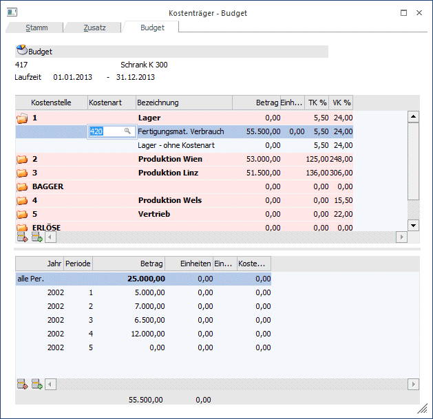
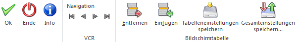
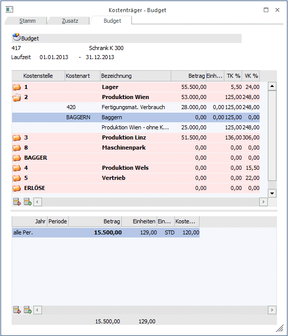

Hier erfolgt die Eingabe der Planwerte für den Plankostenträgervergleich bzw. die Budgetierung der Kostenstellen bzw. Kostenarten für den aktiven Kostenträger.
Das Budget kann hier in unterschiedlichem Detailgrad eingegeben werden. Folgende Varianten sind möglich:
ü Eingabe eines Budgetbetrages für die einzelne Kostenstelle (ohne Unterscheidung nach Perioden oder Kostenarten)
ü Eingabe des Budgets pro Kostenstelle auf Basis einer oder mehrerer Kostenarten in einer Summe pro Kostenart (ohne die Eingabe auf Perioden herunterzubrechen)
ü Eingabe des Budgets pro Kostenstelle auf Basis einer oder mehrerer Kostenarten, wobei das Budget auch noch auf einzelne Perioden innerhalb der Laufzeit des Kostenträgers heruntergebrochen eingegeben werden kann
ü Eingabe des Budgets als Kombination aller oben genannten Varianten
Im oberen Bereich des Fensters werden sämtliche im Datenstand vorhandenen Kostenstellen angezeigt.
Wird eine Plankostenart in der Budgeteingabe angesprochen, um die geplante Beschäftigung (geplante Einheiten - z. B. Stunden für die budgetiert wird) einzutragen, wird der in der Plankostenart eingetragene Budgetansatz pro Einheit (z.B. Stundensatz) automatisch vorgeschlagen und die gesamten Planwerte werden daraus berechnet.

Buttons

Ø OK
Durch Anklicken dieses Buttons oder F5 werden alle eingegebenen Informationen gespeichert.
Ø Ende
Dadurch wird das Fenster geschlossen, alle eingegebenen und nicht gespeicherten Informationen gehen verloren.
Ø Info
Nach Drücken des Info-Buttons erfolgt automatisch ein Wechsel in die Ansicht der Vorkalkulation. Hier werden die erfassten Budgetwerte und die daraus resultierende Vorkalkulation angezeigt.
Ø Navigationsleiste (VCR)
Über die sogenannte VCR-Buttonleiste kann durch Mausklick zwischen den einzelnen Kostenstellen, bzw. Abteilungen geblättert werden:
ü  Damit kann der erste Datensatz angesprochen
werden.
Damit kann der erste Datensatz angesprochen
werden.
ü  Damit kann der vorherige Datensatz
angesprochen werden.
Damit kann der vorherige Datensatz
angesprochen werden.
ü  Damit kann der nächste Datensatz angesprochen
werden.
Damit kann der nächste Datensatz angesprochen
werden.
ü  Damit kann der letzte Datensatz angesprochen
werden.
Damit kann der letzte Datensatz angesprochen
werden.
Ø Entfernen
Damit können hinterlegte Kostenarten entfernt werden. Der Cursor muss sich in der Kostenartenzeile befinden.
Ø Einfügen
Befindet sich der Cursor in der Hauptzeile der Kostenstelle, öffnet sich durch Drücken des Einfügen-Buttons in der nächsten Zeile ein Feld zur Eingabe der Kostenart.
Ø Tabelleneinstellungen speichern
Die Spalten einer Tabelle können grundsätzlich an beliebige Positionen verschoben, bzw. in der Breite entsprechend angepasst werden. Durch Anwahl des Buttons "Tabelleneinstellungen speichern" werden die Einstellungen benutzerspezifisch gespeichert und bei dem nächsten Aufruf des Programmpunktes wieder vorgeschlagen.
Ø Gesamteinstellungen speichern
Im Gegensatz zu "Tabelleneinstellungen speichern" können mit "Gesamteinstellungen speichern" mehrere Tabellenaufbauten gespeichert und nach Wunsch geladen werden. Zusätzlich werden Sonderfunktionen der Tabelle (z.B. "Spalte gruppieren") ebenfalls bei der Speicherung bedacht.
Ø (bei Doppelklick: untergeordnete Ebenen werden angezeigt)
Durch einen Doppelklick auf das Ordner-Symbol in der ersten Spalte werden die darunterliegenden Ebenen angezeigt, z.B. wird die Kostenstelle gesamt in der ersten Zeile angezeigt. Darunter erhalten Sie die Detailanzeige für Budgets (ohne Kostenart oder pro Kostenart) aufgelistet. Um eine neue Kostenartenzeile einzufügen, stellen Sie den Cursor auf die betroffene Kostenstellen-Zeile und drücken Sie den "Einfügen"-Button. Sobald die Kostenart eingegeben wurde, wechseln Sie auf die untere Tabelle, in der Sie nun die einzelnen Budgetwerte (Mengen, Beträge, gesamt oder pro Periode) eingeben können.
Informationsfelder
Es wird die aktuelle Kostenträgernummer, Kostenträgerbezeichnung und eine evtl. eingetragene Laufzeit angezeigt.
Ø Kostenstelle
Anzeige der vorhandenen Kostenstellen.
Ø Kostenart
Eintragung, für welche Kostenart eine Budgetierung gewünscht ist.
Ø Bezeichnung
Anzeige der Kostenstellen- oder Kostenartenbezeichnung.
Ø Betrag
Anzeige der budgetierten Kosten für die gesamte Kostenstelle.
Ø Einheit
Anzeige von budgetierten Einheiten.
Ø TK %
Gemeinkostenzuschlagssatz für die Kalkulation auf Basis der variablen Kosten. Der Zuschlagsprozentsatz wird automatisch mit dem im Kostenstellenstamm hinterlegten Prozentsatz ausgefüllt (siehe Kapitel "Kostenstellenstamm"),
Ø VK %
Gemeinkostenzuschlagssatz für die Kalkulation auf Basis der Vollkosten. Der Zuschlagsprozentsatz wird automatisch mit dem im Kostenstellenstamm hinterlegten Prozentsatz ausgefüllt (siehe Kapitel "Kostenstellenstamm").
Eingabefelder für die Budgeterfassung
Befindet sich der Cursor in der Kostenartenzeile (oder Kostenstelle gesamt - ohne Kostenart) im oberen Eingabefeld, können Sie mit der TAB-Taste (Bewegung nach unten) in das Eingabefenster der Budgeterfassung wechseln. Retour gelangen Sie mit der Shift-TAB-Taste (Bewegung nach oben).
Ø Jahr
ü Alle Per.:
Wird eine
Kostenstelle nur gesamt budgetiert (ohne auf Perioden herunterzubrechen) wird
Ihnen in der ersten Zeile der Plankostenerfassung nur die Zeile "alle Per."
vorgeschlagen. Mit Enter können Sie bis zur Betragseingabe der Plankosten für
diese Eingabezeile wechseln.
ü Perioden laut der eingetragenen
Laufzeit:
Erfolgt eine Budgetierung pro Monat, wechseln Sie aus der Zeile
"alle Per." mit Cursor-Down in die nächsten Eingabezeilen. Sie erhalten eine
Anzeige der möglichen Perioden/Jahre. Mit Cursor-Down werden alle möglichen
Eingabeperioden laut der beim Kostenträger eingetragenen Laufzeit vorgeschlagen.
Ø Monat
Anzeige der gültigen Monate.
Ø Einheit
Anzeige der Bezeichnung für die Einheit. Hier erfolgt nur eine Anzeige, wenn eine Einheit (Std., KG,...) bei der Kostenart hinterlegt wurde.
Ø Kosten/Einh
Anzeige der Kosten pro Einheit (z.B. Stundensatz). Hier erhalten Sie immer eine Anzeige der derzeit aktuell eingetragenen Kosten/Einheit, die bei einer Plankostenart eingetragen ist.
Ø Einheiten
Erfassung der Anzahl der geplanten Einheiten (Beschäftigung).
Ø Betrag
Aufgrund der hinterlegten Kosten pro Einheit und der Eingabe der geplanten Einheiten werden die Plankosten berechnet. Hat die Kostenart keine Einheit hinterlegt bzw. ist sie keine Plankostenart, kann der Betrag direkt eingegeben werden
Hinweis
Errechnete Plankostenbeträge werden fix im Kostenträger-Budget gespeichert. Üblicherweise muss eine Änderung der Kosten/Einheit in den Plankostenarten nicht sofort für alle Kostenträger auch automatisch gültig sein. Ist eine Aktualisierung trotzdem gewünscht, so kann dies aber bei Bedarf nachträglich editiert (oder mit F3 aktualisiert) werden.
Ø Summe Einheiten/Betrag
Werden mehrere Perioden budgetiert, erhalten Sie für die Einheiten und den Betrag jeweils einen aktualisierten Saldo als Information unter dem Planungsfenster angezeigt.
Beispiel Kostenträger Budgetierung

In obigem Beispiel erfolgte die Auswahl des Kostenträgers "417". Im Register Budget wird für die Kostenstelle Produktion Wien die Plankostenart "Baggern" ausgewählt. Dadurch können im unteren Fensterbereich aufgrund der Laufzeit pro Periode die Plankosten eingetragen werden.
Im Feld Kosten wird der geplante Satz (z.B. Stundensatz) laut der ausgewählten Plankostenart vorgeschlagen.
Durch Eintragung der geplanten Einheiten (d.h. die geplanten Beschäftigungsstunden des Baggers auf dem Kostenträger 417 und der Kostenstelle Produktion Wien) werden die Plankosten errechnet (siehe Plankostenträgervergleich).